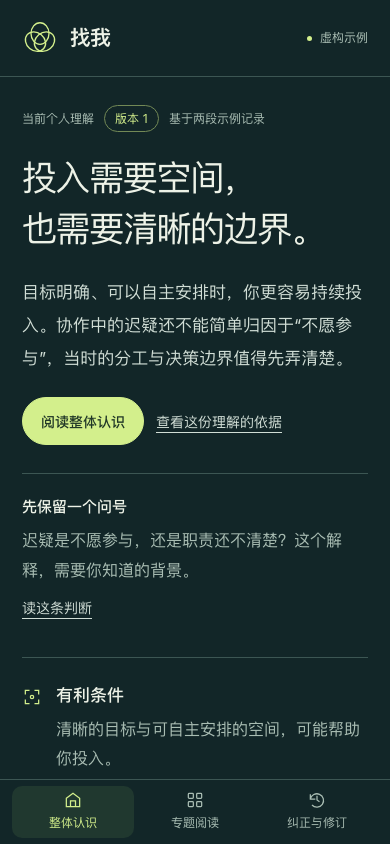
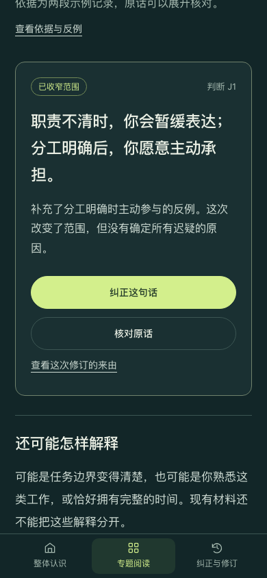
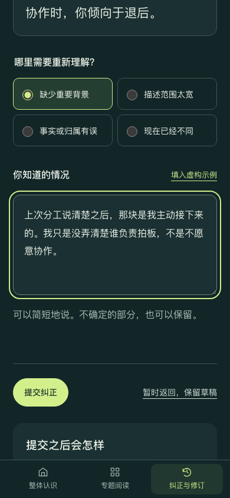
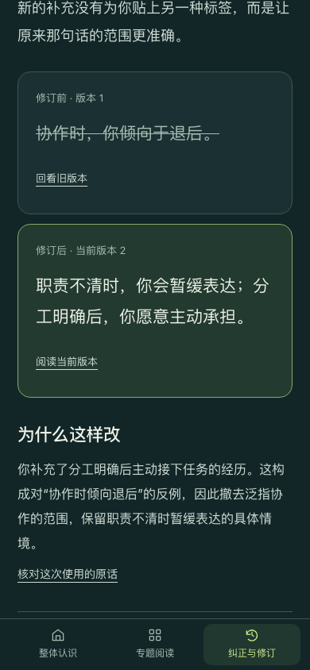
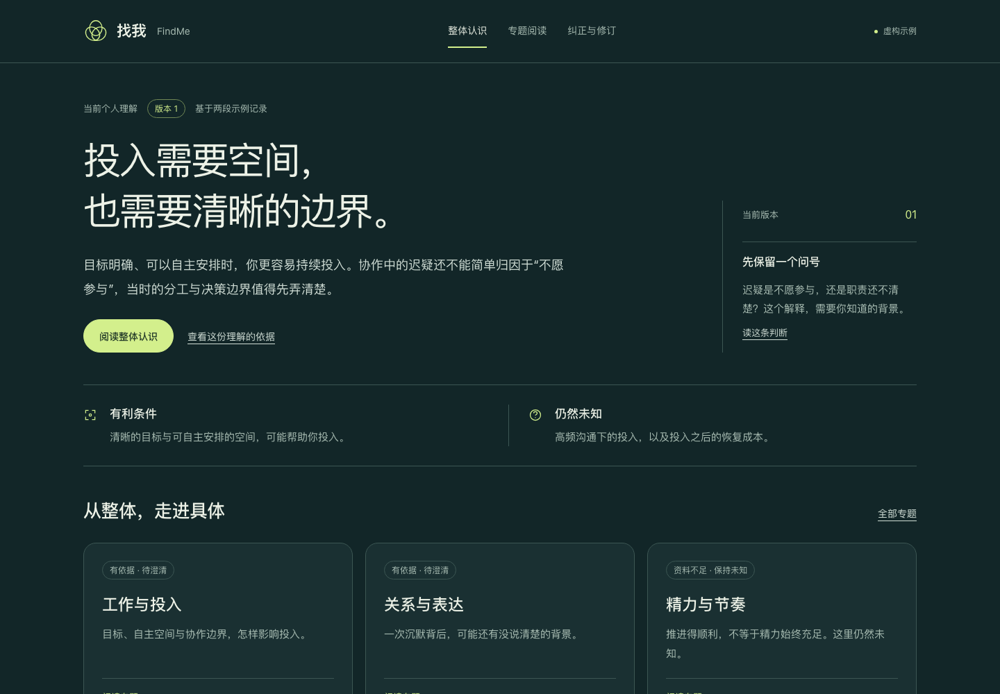
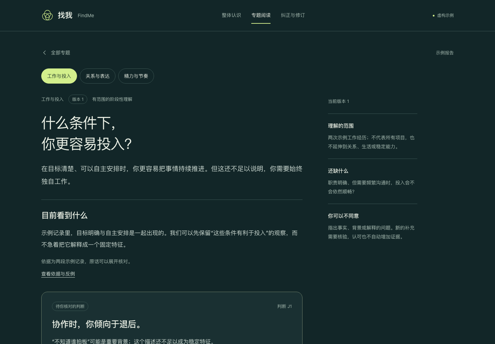
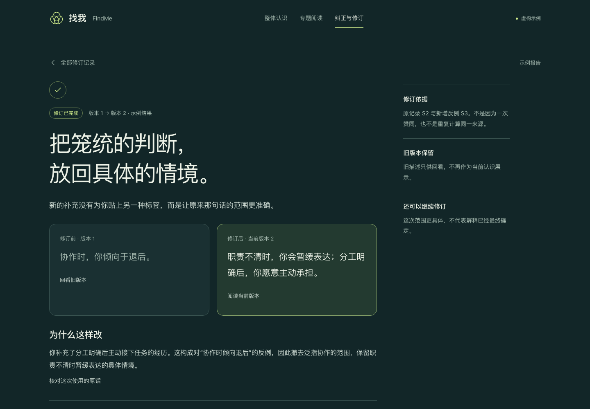

保留 B 的深墨绿与浅黄绿，让关系图退到辅助位置。完整阅读、查看依据、纠正和修订回看，现在形成同一条路径。
阅读整体认识 → 工作与投入 → 纠正这句话 → 填入虚构示例 → 提交纠正 → 查看修订前后 → 阅读当前整体认识。
示例可演示从版本 1 到版本 2；自行输入只进入待核验。草稿在本次打开期间保留，刷新后重置。







1440×1000、390×844、375×812 三个视口均已实际运行：整体阅读、关系展开、证据核对、纠正草稿、预设修订、旧版本回看、关联专题同步、自由输入待核验与前进后退均通过。没有横向溢出、控制台错误或 HTTP 请求。
手机文字对比度至少 4.5:1，标签至少 12px，可点击区域至少 44×44px。此为独立交互原型，未接通正式 App；未验证 Safari 与真实触屏设备。
设计选择见 方向确认；结果证据见 验证记录。本轮没有修改正式 App、接口、数据库或部署。